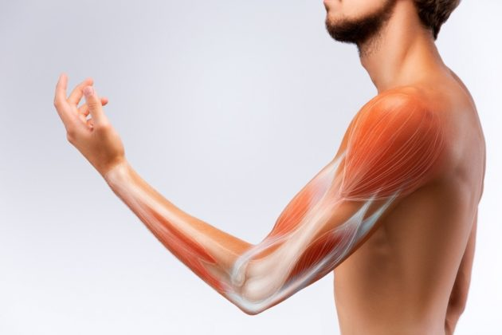
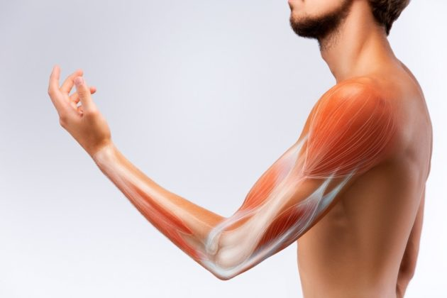

El brazo izquierdo contiene músculos, huesos y articulaciones que permiten la movilidad y fuerza para realizar tareas diarias.
Volver al mapa
El brazo izquierdo contiene músculos, huesos y articulaciones que permiten la movilidad y fuerza para realizar tareas diarias.
